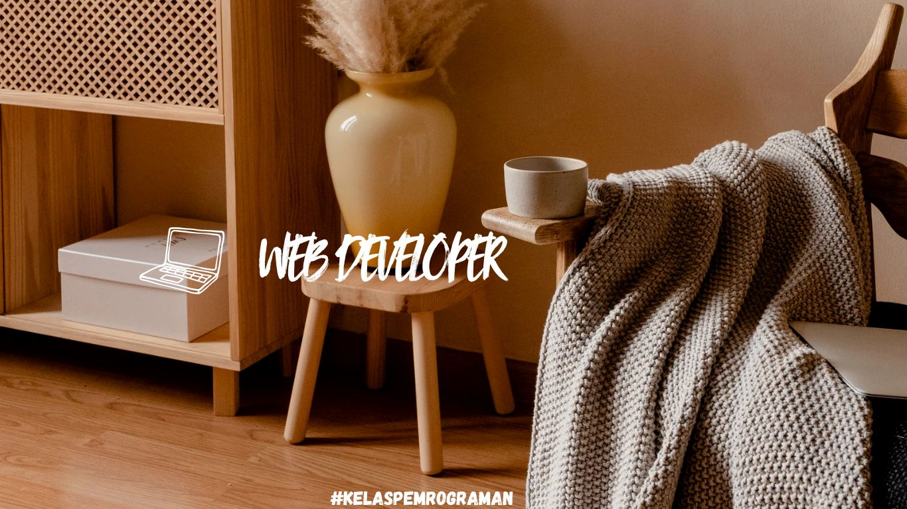
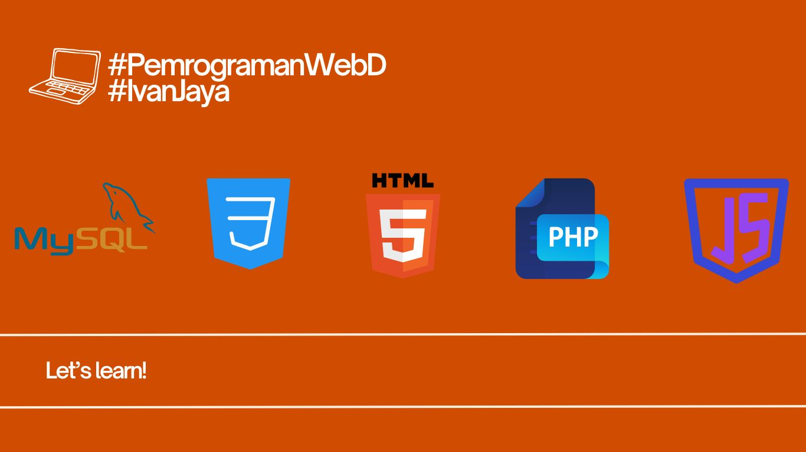

|  | |
|  |
HTML(Hypertext Markup Language) Digunakan untuk membuat struktur dasar halaman web CSS(Cascading Style Sheets) Berfungsi untuk mengatur tampilan visual dan tata letak halaman JavaScriptBahasa pemrograman yang memungkinkan interaksi dinamis di situs web MySQLSistem manajemen basis data yang digunakan untuk menyimpan dan mengelola data situs web secara efisien PHPBahasa server-side yang digunakan untuk menangani logika bisnis dan pengolahan data di server |